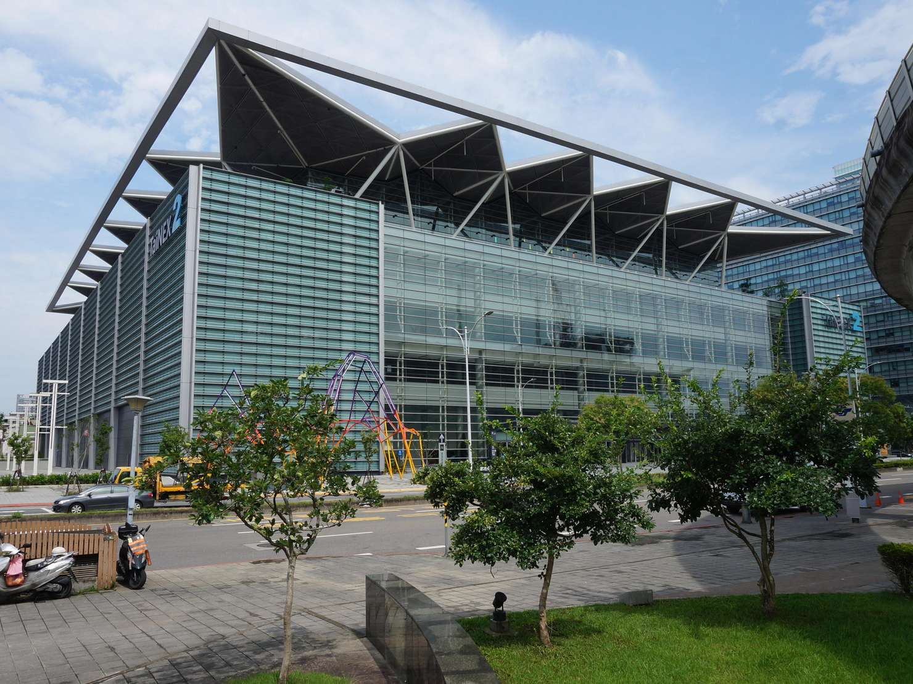
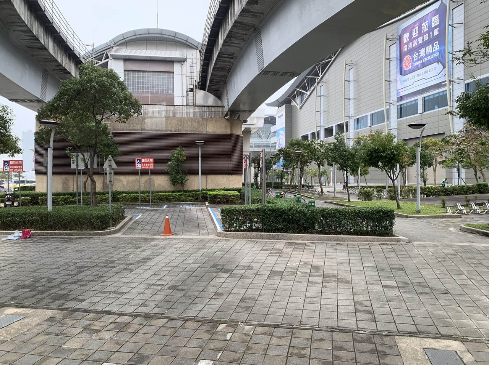

Venue · Convention centre
Taipei Nangang Exhibition Center (TaiNEX)
- Type
- Convention centre
- Location
- Taipei, Taiwan
- Address
- No. 1 and No. 2, Jingmao 2nd Rd., Nangang District, Taipei City 11568, Taiwan
- Capacity
- 3,600 capacity
- Exhibition space
- 75,600 m²
- Halls
- Official showground tables: TaiNEX 1 first floor 22,680 sqm and fourth floor 22,680 sqm (45,360 sqm); TaiNEX 2 first floor 15,120 sqm and fourth floor 15,120 sqm (30,240 sqm). Combined official exhibition floors 75,600 sqm. Official about page: TaiNEX 1 and 2 together hold more than 5,000 booths and 38 meeting rooms; TaiNEX 2 has a 7th-floor multifunctional conference hall with 14 convertible meeting rooms and a maximum capacity of 3,600 persons. Official about page also cites 156,700 sqm floor space for the TaiNEX 2 building; that is building floor space, not the exhibition-hall total, and is not stored as exhibition_sqm.
- Official website
- https://www.tainex.com.tw/
About
Taipei Nangang exhibition campus operated by TAITRA, recorded as one venue for TaiNEX 1 and TaiNEX 2, which official pages describe as linked by a pedestrian underpass. Official addresses are No. 1, Jingmao 2nd Rd. (Hall 1) and No. 2, Jingmao 2nd Rd. (Hall 2), Nangang District, Taipei City 11568. exhibition_sqm is 75,600, the sum of the four official exhibition floors. capacity_max_delegates is 3,600, the official TaiNEX 2 conference-hall maximum; larger booth/visitor figures are not treated as a delegate capacity. Official enquiry addresses and; is stored. Coordinates are the atlas precise pin used for both halls. Atlas events naming TaiNEX 1, TaiNEX 2 or both, including the TaiNEX portion of COMPUTEX, are linked here. COMPUTEX also uses TWTC and TICC, which are recorded as separate venues.
Spaces
| Name | Type | Capacity | Area |
|---|---|---|---|
| TaiNEX 1, 1F Exhibition | — | — | 22,680 m² |
| TaiNEX 1, 4F Exhibition | — | — | 22,680 m² |
| TaiNEX 2, 1F Exhibition | — | — | 15,120 m² |
| TaiNEX 2, 4F Exhibition | — | — | 15,120 m² |
| TaiNEX 2 multifunctional conference hall (7F) | — | 3,600 | — |
Upcoming events
- Taipei Cycle 2027Taipei, TaiwanExpos
- FOOD TAIPEI MEGA SHOWS 2027Taipei, TaiwanExpos
- Taipei Game Show 2027Taipei, TaiwanCulture
- SEMICON Taiwan 2027Taipei, TaiwanTech
- COMPUTEX 2027Taipei, TaiwanTech
- Smart City Summit & Expo / Net Zero City Expo 2027Taipei, TaiwanTech
- CYBERSEC 2027 Taiwan Cybersecurity ConferenceTaipei, TaiwanTech
- InnoVEX 2027Taipei, TaiwanTech
Sources
- Official source — https://www.tainex.com.tw/en/about/about
- Official source — https://www.tainex.com.tw/en/venue/showgrounds/1/1
- Official source — https://www.tainex.com.tw/en/venue/showgrounds/1/4
- Official source — https://www.tainex.com.tw/en/venue/showgrounds/2/1
- Official source — https://www.tainex.com.tw/en/venue/showgrounds/2/4